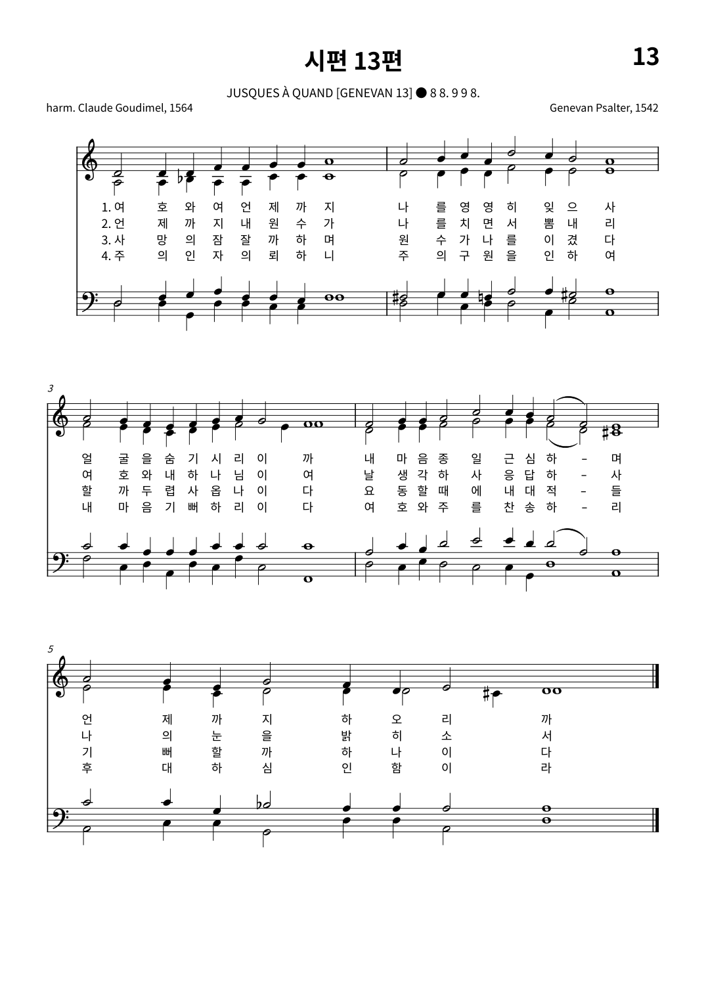

Psalm 13
JUSQUES À QUAND [GENEVAN 13] · 8 8. 9 9 8.
English title: How Long, O LORD, Wilt Thou Forget?
Tune: Genevan Psalter, 1542 · Harmony: Claude Goudimel, 1564 · Lyrics: Korean adaptation of Psalm 13 from the Korean Revised Version (AI draft adaptation · not yet theologically reviewed) · 4 stanzas
Score PDF MusicXML (for printing) MusicXML (for accompaniment, with prelude and repeats) Read Psalm 13 (Korean Revised Version)
Score
← Psalm 12 ListAccompaniment (in preparation)Psalm 14 →
Lyrics (Korean)
Stanza 1 (Ps. 1~2절 앞)
여호와여 언제까지
나를 영영히 잊으사
얼굴을 숨기시리이까
내 마음 종일 근심하며
언제까지 하오리까
여호와여 언제까지
나를 영영히 잊으사
얼굴을 숨기시리이까
내 마음 종일 근심하며
언제까지 하오리까
Stanza 2 (Ps. 2절 뒤~3절 앞)
언제까지 내 원수가
나를 치면서 뽐내리
여호와 내 하나님이여
날 생각하사 응답하사
나의 눈을 밝히소서
언제까지 내 원수가
나를 치면서 뽐내리
여호와 내 하나님이여
날 생각하사 응답하사
나의 눈을 밝히소서
Stanza 3 (Ps. 3절 뒤~4절)
사망의 잠 잘까 하며
원수가 나를 이겼다
할까 두렵사옵나이다
요동할 때에 내 대적들
기뻐할까 하나이다
사망의 잠 잘까 하며
원수가 나를 이겼다
할까 두렵사옵나이다
요동할 때에 내 대적들
기뻐할까 하나이다
Stanza 4 (Ps. 5~6절)
주의 인자 의뢰하니
주의 구원을 인하여
내 마음 기뻐하리이다
여호와 주를 찬송하리
후대하심 인함이라
주의 인자 의뢰하니
주의 구원을 인하여
내 마음 기뻐하리이다
여호와 주를 찬송하리
후대하심 인함이라